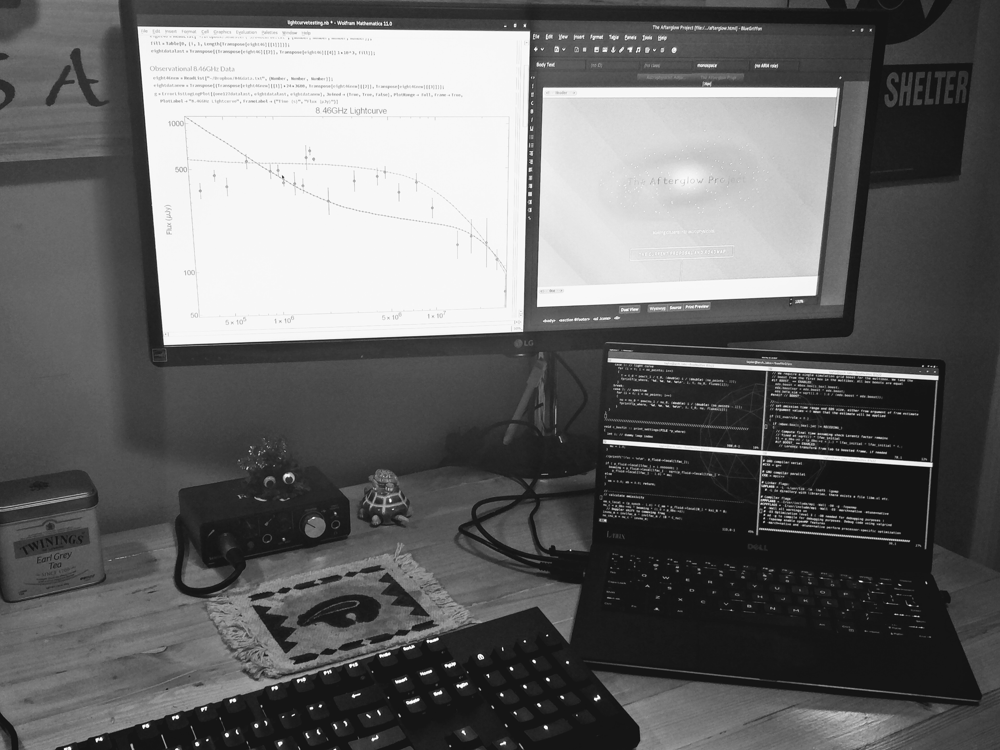
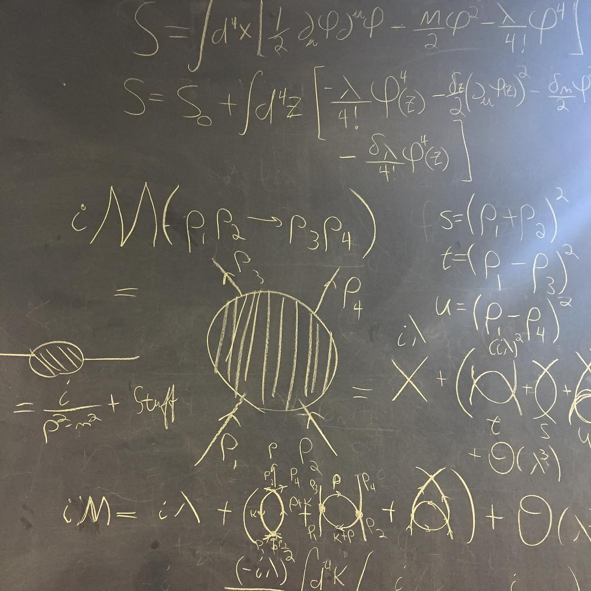

Featured Projects and Research
A selection of my work

GRB Afterglow Modeling
Here I talk about some of the work I've done in applying boxfit to archival lightcurve data

Activity-Cycle Viability Studies
This is my undergraduate thesis work on using Kepler data to identify stars for long-term stellar activity-cycle studies.